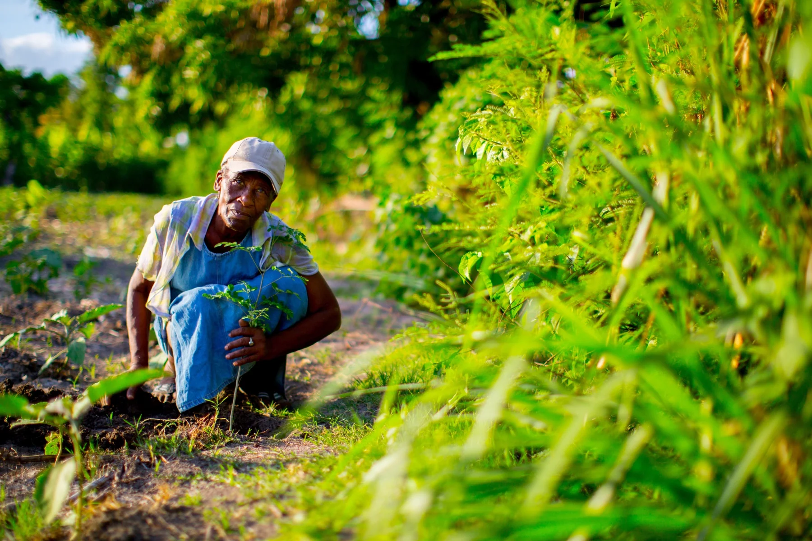
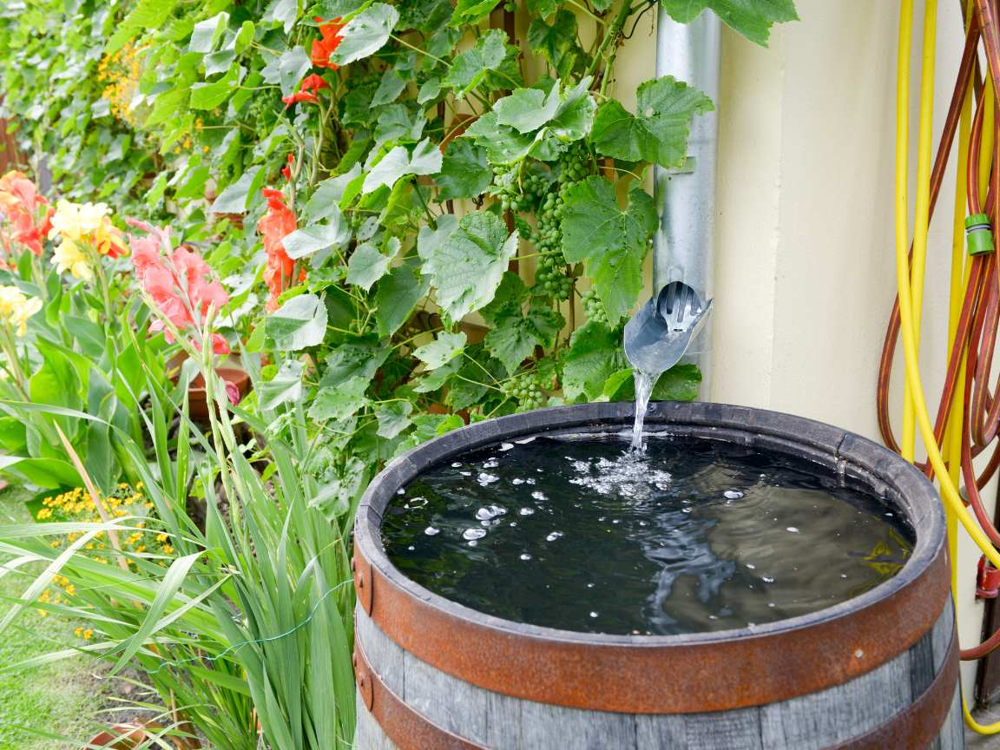

Combatting Desertification: Restoring Degraded Lands and Preventing Soil Erosion
Desertification is a growing environmental crisis that threatens the livelihoods of millions of people worldwide. It occurs when fertile land transforms into arid desert due to factors like deforestation, unsustainable farming, overgrazing, and climate change. The good news is that desertification can be reversed through effective strategies and sustainable practices. This page explores actionable solutions to restore degraded lands, prevent soil erosion, and build a resilient future.
What is Desertification?
Desertification is the process by which fertile land becomes desert, often due to human activities and climatic changes. It leads to:
- Loss of arable land
- Reduced biodiversity
- Increased soil erosion
- Water scarcity
- Food insecurity
Over 2 billion people worldwide are affected by desertification, making it a critical global issue. However, with the right strategies, we can restore degraded lands and protect our planet.
Key Strategies to Combat Desertification

Sustainable Land Management
Sustainable land management focuses on using land resources efficiently while preserving ecosystems. Key practices include agroforestry, which integrates trees and shrubs into farming systems to improve soil fertility, reduce erosion, and enhance water retention. Crop rotation and diversification are also essential, as alternating crops and planting diverse species help maintain soil health and prevent nutrient depletion. Additionally, conservation tillage minimizes soil disturbance to preserve its structure and reduce erosion, making it a vital practice for sustainable agriculture.
Reforestation and Afforestation
Planting trees is one of the most effective ways to combat desertification. Reforestation and afforestation stabilize soil, prevent erosion, and improve water cycles by promoting groundwater recharge. These practices also restore biodiversity by creating habitats for wildlife. Using native tree species ensures better adaptation to local conditions, enhancing the long-term sustainability of reforestation efforts.

Water Management Techniques
Efficient water use is critical in arid regions to combat desertification. Rainwater harvesting involves collecting and storing rainwater for irrigation and other uses, reducing reliance on scarce water resources. Drip irrigation delivers water directly to plant roots, minimizing waste and preventing soil salinization. Structures like check dams and terraces slow water flow, reduce erosion, and promote groundwater recharge, making them essential for sustainable water management.
Soil Conservation Practices
Protecting soil is essential to prevent desertification. Contour plowing, which involves plowing along the contours of the land, reduces runoff and erosion. Windbreaks, created by planting rows of trees or shrubs, shield soil from wind erosion. Mulching, the practice of covering soil with organic materials, helps retain moisture and prevent erosion, ensuring the soil remains fertile and productive.
How You Can Help
You can contribute to wildlife conservation by supporting local and global initiatives, volunteering your time, or simply spreading awareness about the importance of protecting our planet's biodiversity.
Get Involved